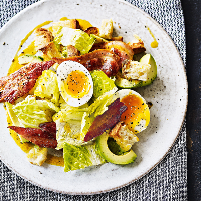

Dottie's Homestyle Garden Salad

Description:
Refreshing side salad with Dorothy Lynch Homestyle dressing.
Ingredients:
- 1 bag mixed greens
- 2 hard-boiled eggs, sliced
- 1 small red onion, quartered and sliced
- 1 cup cherry tomatoes
- Bacon Bits
Steps:
- Mix ingredients together in large bowl
- Add generous amount of Dorothy Lynch dressing
- Enjoy!
Back / Home